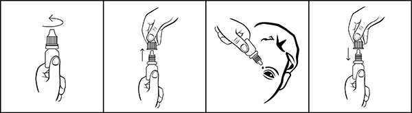

|
 |
| ТИМИЛОКС® (TIMILOKS) moxifloxacin капли глазные | ||||||||
|
Клинико-фармакологическая группа: Антибактериальный препарат группы фторхинолонов для местного применения в офтальмологии Номер и дата регистрации: ЛП-006638 от 09.12.20 Код ATX: S01AE07 |
Владелец регистрационного удостоверения: зарегистрировано и произведено Представительство: | |||||||
Форма выпуска, состав и упаковка Капли глазные в виде прозрачного или слегка опалесцирующего раствора зеленовато-желтого цвета.
Вспомогательные вещества: натрия хлорид - 7 мг, борная кислота - 3 мг, 1М раствор натрия гидроксида или 1М раствор хлористоводородной кислоты - до pH 6.3-7.5, вода д/и - до 1 мл. 5 мл - флаконы из полиэтилена низкой плотности (1) с капельницей - пачки картонные. | ||||||||
| ||||||||
Описание препарата основано на официально утвержденной инструкции по применению и утверждено компанией-производителем для издания 2022 г. | ||||||||
Фармакологическое действие |
Фармакокинетика |
Показания |
Режим дозирования |
Побочное действие |
Противопоказания |
Беременность и лактация |
Особые указания |
Передозировка |
Лекарственное взаимодействие |
Условия хранения и сроки годности |
Условия реализации
Фармакологическое действие
Моксифлоксацин - антибактериальный препарат IV поколения из группы фторхинолонов. Проявляет активность в отношении широкого спектра грамположительных и грамотрицательных микроорганизмов, анаэробных, кислотоустойчивых и атипичных бактерий. Механизм действия связан с ингибированием топоизомеразы II (ДНК-гиразы) и топоизомеразы IV. ДНК-гираза - фермент, участвующий в репликации, транскрипции и репарации ДНК бактерий. Топоизомераза IV - фермент, участвующий в расщеплении хромосомальной ДНК во время деления бактериальной клетки. Отсутствует перекрестная резистентность с макролидами, аминогликозидами и тетрациклинами. Сообщалось о развитии перекрестной резистентности между применявшимся системно моксифлоксацином и другими фторхинолонами Моксифлоксацин активен в отношении большинства штаммов микроорганизмов (как in vitro, так и in vivo). Грамположительные бактерии: Corynebacterium spp., включая Corynebacterium diphtheriae; Micrococcus luteus (включая штаммы, нечувствительные к эритромицину, гентамицину, тетрациклину и/или триметоприму); Staphylococcus aureus (включая штаммы, нечувствительные к метициллину, эритромицину, гентамицину, офлоксацину, тетрациклину и/или триметоприму); Staphylococcus epidermidis (включая штаммы, нечувствительные к метициллину, эритромицину, гентамицину, офлоксацину, тетрациклину и/или триметоприму); Staphylococcus haemolyticus (включая штаммы, нечувствительные к метициллину, эритромицину, гентамицину, офлоксацину, тетрациклину и/или триметоприму); Staphylococcus hominis (включая штаммы, нечувствительные к метициллину, эритромицину, тетрациклину и/или триметоприму); Staphylococcus warneri (включая штаммы, нечувствительные к эритромицину); Streptococcus mitis (включая штаммы, нечувствительные к пенициллину, эритромицину, тетрациклину и/или триметоприму); Streptococcus pneumoniae (включая штаммы, нечувствительные к пенициллину, эритромицину, гентамицину, тетрациклину и/или триметоприму); Streptococcus группы viridians (включая штаммы, нечувствительные к пенициллину, эритромицину, тетрациклину и/или триметоприму). Грамотрицательные бактерии: Acinetobacter lwoffii, Haemophilus influenzae (включая штаммы, нечувствительные к ампициллину); Haemophilus parainfluenzae; Klebsiella spp. Другие микроорганизмы: Chlamydia trachomatis. Моксифлоксацин действует in vitro против большинства перечисленных ниже микроорганизмов, но клиническое значение этих данных неизвестно. Грамположительные бактерии: Listeria monocytogenes, Staphylococcus saprophyticus, Streptococcus agalactiae, Streptococcus mitis, Streptococcus pyogenes, Streptococcus групп C, G, F. Грамотрицательные бактерии: Acinetobacter baumannii, Acinetobacter calcoaceticus, Citrobacter freundii, Citrobacter koseri, Enterobacter aerogenes, Enterobacter cloacae, Escherichia coli, Klebsiella oxytoca, Klebsiella pneumonia, Moraxella catarrhalis, Morganella morganii, Neisseria gonorrhoeae, Proteus mirabilis, Proteus vulgaris, Pseudomonas stutzeri. Анаэробные микроорганизмы: Clostridium perfringens, Fusobacterium spp., Prevotella spp., Propionibacterium acnes. Другие микроорганизмы: Chlamydia pneumoniae, Legionella pneumophila, Mycobacterium avium, Mycobacterium marinum, Mycoplasma pneumoniae. По эпидемиологическим данным Европейского комитета по определению чувствительности к противомикробным препаратам, пороговые значения ингибирующей концентрации моксифлоксацина для различных микроорганизмов следующие: Corynebacterium - нет данных; Staphylococcus aureus - 0.25 мг/л; Staphylococcus, coag-neg. - 0.25 мг/л; Streptococcus pneumoniae - 0.5 мг/л; Streptococcus pyogenes - 0.5 мг/л; Streptococcus viridans group - 0.5 мг/л; Enterobacter spp. - 0.25 мг/л; Haemophilus influenzae - 0.125 мг/л; Klebsiella spp. - 0.25 мг/л; Moraxella catarrhalis - 0.25 мг/л; Morganella morganii - 0.25 мг/л; Neisseria gonorrhoeae - 0.032 мг/л; Pseudomonas aeruginosa - 4 мг/л; Serratia marcescens - 1 мг/л. Фармакокинетика
При местном применении происходит системное всасывание моксифлоксацина: Cmax моксифлоксацина в плазме крови составляет 2.7 нг/мл, AUC - 45 нг×ч/мл. Данные значения примерно в 1600 раз и в 1000 раз меньше, чем Cmax и AUC после применения терапевтической дозы моксифлоксацина 400 мг внутрь. T1/2 моксифлоксацина из плазмы составляет около 13 ч. Режим дозирования
Местно, в конъюнктивальный мешок. Применение у взрослых (в том числе у пожилых пациентов старше 65 лет) По 1 капле 3 раза/сут в пораженный глаз. Улучшение состояния наступает через 5 дней проводимой терапии, но лечение следует продолжать на протяжении еще 2-3 дней. При отсутствии терапевтического эффекта через 5 дней терапии рекомендуется пересмотреть диагноз и выбор лечебной тактики. Длительность курса терапии зависит от тяжести состояния пациента, клинических и бактериологических особенностей инфекционного процесса. Применение в педиатрической популяции Не требуется коррекция режима дозирования при применении у детей. Печеночная и почечная недостаточность Коррекция дозы не требуется. В целях предотвращения абсорбции препарата через слизистую оболочку носа необходимо пальцем пережать носослезный канал на 2-3 минуты после инстилляций. При применении нескольких препаратов для местного применения в офтальмологии интервал между их применением должен составлять не менее 5 мин, глазные мази следует применять в последнюю очередь. Порядок работы с флаконом:  1. Вращающими движениями против часовой стрелки открыть флакон и снять колпачок. 2. Осторожно, не касаясь пальцами наконечника флакона, перевернуть флакон, зафиксировать между большим и указательным пальцами одной руки. 3. Запрокинуть голову назад, расположить наконечник флакона над глазом и указательным пальцем другой руки оттянуть нижнее веко вниз. Слегка надавить на флакон и закапать необходимое количество препарата в конъюнктивальный мешок глаза. Необходимо избегать контактов наконечника открытого флакона с поверхностью глаза и руками. 4. После использования надеть колпачок на флакон и закрыть вращающими движениями по часовой стрелке. После вскрытия флакона препарат можно использовать в течение 1 месяца. По истечении этого срока препарат следует выбросить. При видимых повреждениях флакона применять препарат не следует. Побочное действие
Частота развития нежелательных реакций классифицирована в соответствии с рекомендациями ВОЗ: очень часто (≥10%); часто (≥1%, <10%); нечасто (≥0.1%, <1%); редко (≥0.01%, < 0.1%); очень редко (<0.01%); частота неизвестна (по имеющимся данным установить частоту возникновения не представляется возможным). Со стороны крови и лимфатической системы: редко - снижение уровня гемоглобина. Со стороны иммунной системы: частота неизвестна - гиперчувствительность. Со стороны нервной системы: нечасто - головная боль; редко - парестезия; частота неизвестна - головокружение. Со стороны органа зрения: часто - боль, раздражение в глазах; нечасто - точечный кератит, синдром сухого глаза, конъюнктивальное кровоизлияние, гиперемия глаза, зуд в глазах, отек век, ощущение дискомфорта в глазах; редко - дефекты эпителия роговицы, конъюнктивит, блефарит, отек глаз, отек конъюнктивы, нечеткость зрения, снижение остроты зрения, астенопия, эритема век; частота неизвестна - эндофтальмит, язвенный кератит, эрозия роговицы, повышение внутриглазного давления, помутнение роговицы, инфильтраты роговицы, отложения роговицы, аллергические реакции глаз, кератит, отек роговицы, светобоязнь, повышенное слезотечение, выделения из глаз, ощущение инородного тела в глазах. Со стороны сердца: частота неизвестна - ощущение сердцебиения. Со стороны дыхательной системы: редко - ощущение дискомфорта в носу, фаринголарингеальная боль, ощущение инородного тела в горле; частота неизвестна - диспноэ. Со стороны ЖКТ: нечасто - дисгевзия; редко - рвота; частота неизвестна - тошнота. Со стороны печени и желчевыводящих путей: редко - повышение активности АЛТ и ГГТ. Со стороны кожи и подкожных тканей: частота неизвестна - эритема, сыпь, зуд, крапивница. Противопоказания
Применение при беременности и кормлении грудью
Достаточного опыта по применению препарата во время беременности и в период грудного вскармливания нет. Применение препарата при беременности и в период грудного вскармливания возможно в случае, когда ожидаемый лечебный эффект для матери превышает потенциальный риск для плода и ребенка. Исследования на животных показали, что после перорального приема моксифлоксацина с грудным молоком экскретируются незначительные количества вещества. Тем не менее, при соблюдении терапевтических доз препарата не ожидается развитие нежелательных реакций у грудных детей. Тератогенность При доклинических исследованиях на животных моксифлоксацин не оказывал тератогенного действия в дозах 500 мг/кг/сут (что примерно в 21.700 раз выше рекомендуемой суточной дозы для человека). Однако отмечалось некоторое снижение массы тела плода и задержка развития скелетно-мышечной системы. На фоне дозы 100 мг/кг/сут отмечалось повышение частоты уменьшения роста новорожденных. Особые указания
Только для офтальмологического применения. Не для инъекций. Не допускается введение препарата субконъюнктивально или непосредственно в переднюю камеру глаза. Были получены сообщения о развитии серьезных и, в некоторых случаях, смертельных реакций гиперчувствительности (анафилактических реакций) у пациентов, систематически принимавших хинолоны; у некоторых пациентов развитие реакции наблюдалось уже после введения первой дозы. Некоторые реакции сопровождались сердечно-сосудистой недостаточностью, потерей сознания, отеком Квинке (включая отек гортани, глотки или лица), обструкцией дыхательных путей, диспноэ, крапивницей и зудом. При развитии аллергической реакции следует прекратить применение препарата. В случае серьезных острых реакций гиперчувствительности может потребоваться немедленное проведение реанимационных мероприятий. Приборы для возобновления поступления кислорода и восстановления проходимости дыхательных путей применяются только по клиническим показаниям. Длительное применение антибиотика может приводить к избыточному росту невосприимчивых микроорганизмов, в т.ч. грибков. В случае возникновения суперинфекции необходимо прекратить применение препарата и назначить адекватную терапию. Системное применение фторхинолонов, включая моксифлоксацин, может привести к воспалению и разрыву сухожилий, особенно у пациентов пожилого возраста и пациентов, одновременно принимающих кортикостероиды. Таким образом, при появлении первых симптомов воспаления сухожилий следует прекратить прием препарата. Данные по эффективности и безопасности препарата для лечения конъюнктивитов у новорожденных ограничены. Поэтому не рекомендуется использование препарата для лечения конъюнктивитов у новорожденных. Препарат не рекомендуется применять для профилактики или эмпирической терапии гонококковых конъюнктивитов, в т.ч. гонококковой офтальмии новорожденных, из-за фторхинолоновой резистентности гонококков Neisseria gonorrhoeae. Пациенты с глазными инфекциями, вызванными гонококками Neisseria gonorrhoeae, должны получать соответствующее системное лечение. Моксифлоксацин не рекомендуется применять для лечения глазных инфекций, вызванных Chlamydia trachomatis, у пациентов в возрасте младше 2 лет, т.к. соответствующие исследования не проводились. Пациенты в возрасте старше 2 лет с глазными инфекциями, вызванными Chlamydia trachomatis, должны получать соответствующее системное лечение. Новорожденные с офтальмией новорожденных должны получать соответствующее лечение исходя из их состояния, например, системное лечение в случаях, вызванных Chlamydia trachomatis или Neisseria gonorrhoeae. Пациентам не рекомендуется носить контактные линзы, если у них есть признаки инфекционных заболеваний глазного яблока. При использовании препарата следует избегать соприкосновения наконечника флакона с какой-либо поверхностью во избежание микробного загрязнения флакона и его содержимого. В случае одновременного применения других офтальмологических препаратов необходимо соблюдать интервал между инстилляцией не менее 5 минут; глазные мази следует применять в последнюю очередь. Влияние на способность к управлению транспортными средствами и механизмами Применение любых глазных капель может вызвать временную нечеткость или другие нарушения зрения. Не следует управлять транспортными средствами и заниматься другими потенциально опасными видами деятельности, требующими повышенной концентрации внимания и быстроты психомоторных реакций, до исчезновения симптомов снижения остроты зрения. Передозировка
Общее содержание моксифлоксацина в препарате слишком мало для развития нежелательных явлений при случайном проглатывании содержимого флакона. Лекарственное взаимодействие
Специальных исследований взаимодействия местно назначаемого моксифлоксацина с другими лекарственными средствами не проводилось. В связи с низкой системной концентрацией после местного применения в виде инстилляций взаимодействие с другими лекарственными средствами маловероятно. |
||||||||
Вернуться наверх |
||||||||
Copyright © Справочник Видаль «Лекарственные препараты в России», Москва, Россия